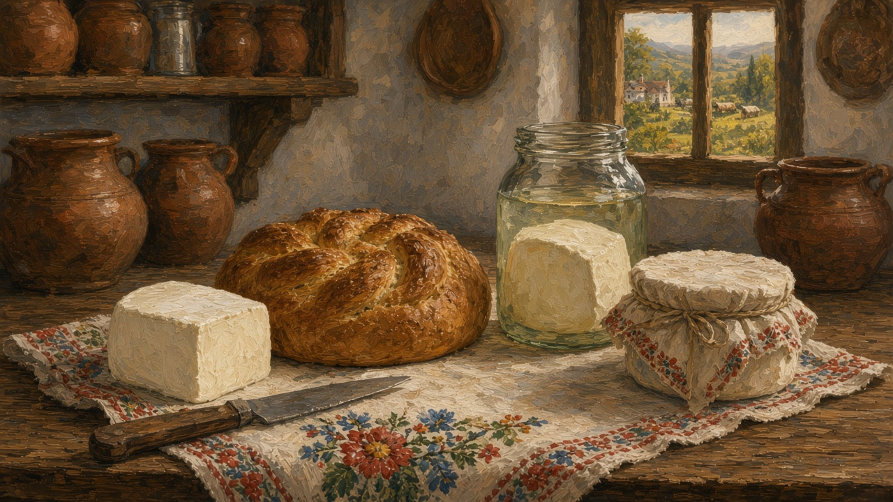
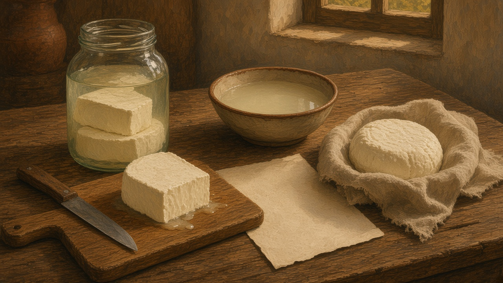

Cheese
Brânză. The white salt on the table and in the jar — a piece cut for the bread, not a shop wall of labels, and not a tasting flight.

On the table
Cheese sits where bread sits. A slice of telemea with the loaf, or crumbled into ouă cu telemea — eggs and the salty white kind, the weekday pan on the recipes tab. Mămăligă takes a piece on the side, or a crumble while the cornmeal is still hot. That loaf is on bread. You do not set out a board of kinds. You cut what the house has, and the knife stays on the cloth.
The cut is ordinary and specific. Someone lifts a slab from the jar and lets the brine drip back, or takes the round out of its cloth. A wedge for the table. The rest goes back — paper from the piață, or the same damp cloth, so the cut face does not dry by evening. A child gets a smaller piece. A guest gets the end that still looks whole. You do not need a cheese board. You need the habit of asking whether this table still cuts a piece from a cloth-wrapped round, or only opens a plastic tub.
From the sheep or the cow
Summer is milk. Sheep more than cow, up at the fold. A household that sent animals up in May expects cloth-wrapped rounds back in October, salty enough to last, the cloth stained where the brine crept. Cow’s milk, when a yard still has one, makes a milder white and, often, the firmer yellow that is not telemea. This page is not a breed list. It is the claim that the cheese still remembers an animal someone can name.
The names people use
Brânză is the word for the lot. Under it, a kitchen still names a few, and they are not the same bite. Telemea is the salty white kind, cut in slabs, kept in brine until it can travel. Caș is the first cheese, fresh, barely salted, soft enough to eat the day it is made. Urdă comes from the whey that was left — milder, eaten with a spoon more often than cut. Brânză de burduf is packed until it bites, in a sheep’s stomach or in bark, and you know it before anyone says the word.
Cașcaval is the other name a shop will offer, and it is not this plate. Firmer, yellower, sliced thin, more often from the cow. It belongs in a sandwich. Telemea belongs on the bread. This page is not a catalog. It is the short list a house still says out loud when someone asks what is in the jar.
The day it is made
At the stână, or in a yard that still has milk, the morning has an order. The milk sets. It goes into a cloth. Caș drains until it holds a shape. What will keep is pressed — a board, a stone, an hour with nothing else asked of it — and then salted for the jar. The whey is the second job of the same pot. Heat it and the urdă comes up, pale. Two cheeses from one milking, and the cloth has to be washed before evening.
The walk and the fire are on shepherds. A house with one cow does a smaller version at the kitchen table: a pot, a cloth, a bowl for what drips. Most houses do not. They meet the cheese already cut. You do not need the temperatures. You need the habit of asking whether this piece still had a morning like that, and whether anyone can point to the animal.

In the cellar
Telemea sits in saramură — brine — until it can travel or wait. The jar is glass or a crock. The liquid goes cloudy. The slabs are stacked so a hand can lift one without fishing. What matters is that the cheese stays under the brine, not drying on a plate in the air. A lid that does not quite seal still counts. That grain is on salt.
The attic and the cold room that hold the jars are rooms of the house. Winter opens them when the garden is empty. Harvest fills the same shelf with cabbage and jam; this is the animal half. You do not need a lecture on aging rooms. You need the habit of asking whether this cellar still keeps a jar of brine, or only a fridge door.
Market and house
A piață still sells telemea by the piece, cut from a white block while you watch, wrapped in paper that goes translucent at the wet corner. Caș comes softer, sometimes still in its cloth. Urdă sits in a bowl and does not wait until next week. They travel farther than salad — that square, and the scale that argues the weight, is on the market. Some houses still make a little from a neighbor’s milk. Most now buy.
The tub from town is the other habit: a plastic box, a printed name, a date on the lid, the same white salt with the yard taken out of the story. The difference is not a brand. It is whether the piece was cut for this bag, or only opened at home from a shelf that looks the same in every shop.
When the house no longer makes it
Fewer yards keep a sheep or a cow. The word stayed. Brânză still means the white salt you trust more if it came from someone you can name, even when the piece came from the piață. Apartment kitchens keep a plastic box in the door. A spoon of miere on the same breakfast is the other jar that still travels as a gift — that one is on honey. The claim is the same as the loaf: whether this house still knows a round in brine, or only a shelf.
This page is only that: the piece on the bread, the eggs in the pan, the cellar jar, and the word that outlasted the fold.